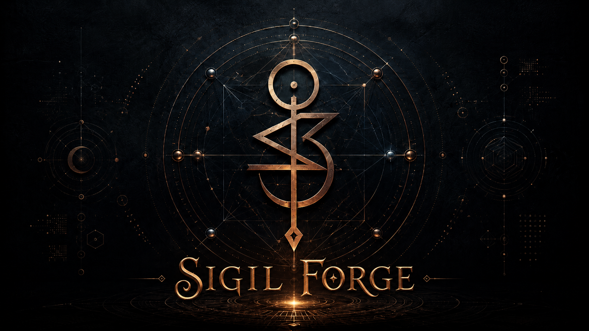

Wizard
Step runner
One question per turn via wizard --next. Quick path
for most users; full path for craft options and Proof of Intent.

v0.12.6 · Hermes skill · MIT
Offline multi-channel sigils: procedural glyph, forge packet, steganography, wallpapers, and privacy-preserving Proof of Intent — for Hermes agents and operators who want craft without cloud.
00 · Craft
Sigil-Forge installs as a standalone Hermes skill
(~/.hermes/skills/sigil-forge). The agent owns intake and
framing; the engine owns geometry, digests, and carriers. No image
API required.
Wizard
One question per turn via wizard --next. Quick path
for most users; full path for craft options and Proof of Intent.
Geometry
Monogram reduction, magic-square paths, Rose Cross, bind-runes, optional planetary plate strokes — never hand-invented by the agent.
Carriers
SVG channels and PNG LSB (digest / SF11 root). Wallpapers composite the immutable glyph over atmosphere — never redraw the topology.
Provenance
Salted commitment, Merkle sigil_root, optional sealed
capsule. Proofs are provenance — not efficacy claims.
01 · Pipeline
Safety and authority-seal gates first. Then normalize, digest, fuse
layout, stego, packet, optional capsule — and recover the digest with
verify.
01
Hermes loops the wizard step runner, or experts call
construct --intent "…" directly.
02
glyph.svg / glyph.png,
forge-packet.json,
forge-manifest.json,
sigil_root — under
out/sigil-forge/<run-id>/.
03
Recover digest (and root when SF11). Optional
open --capsule and verify-proof for
sealed witnesses.
02 · Surfaces
| intent_digest | SHA-256 of normalized intent — geometry + legacy stego |
|---|---|
| intent_commitment | Salted per-run commitment (value public; nonce private) |
| sigil_root | Merkle root over public leaves — no self-reference |
| intent-capsule.json | Sealed witness when passphrase + --proof commitment |
| proof modes |
none · commitment ·
zk-knowledge · zk-forge
(Noir/risc0 skip if unavailable)
|
| policy | No default efficacy claims; authority-seal requests excluded from the default forge; learning ledger stays PROPOSED |
03 · Install
Python 3.10+ stdlib for the core path. Optional
argon2-cffi and jsonschema. Lean install
excludes implementation plans under docs/superpowers.
# install as Hermes skill bash install.sh # → ~/.hermes/skills/sigil-forge # smoke python3 scripts/sigil_forge.py check # wizard (Hermes default loop) python3 scripts/sigil_forge.py wizard --session-new --path quick # expert construct + verify python3 scripts/sigil_forge.py construct \ --intent "I maintain calm focus" --out out/sigil-forge python3 scripts/sigil_forge.py verify out/sigil-forge/*/glyph.svg